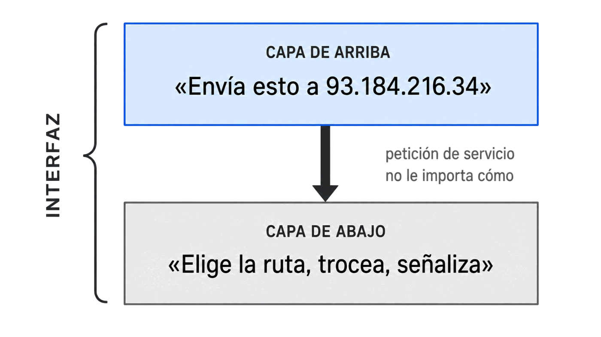
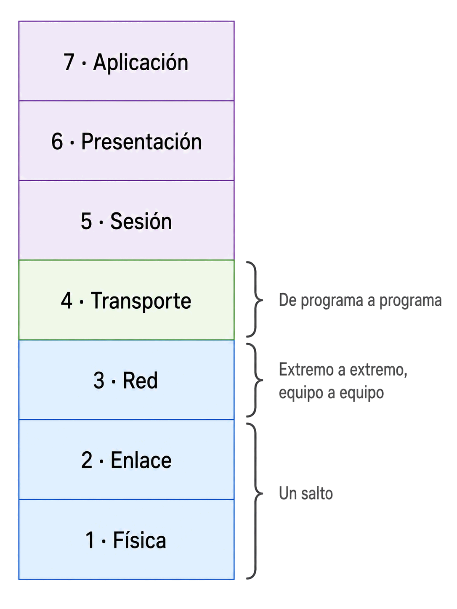

No lo son. Son capas de una misma arquitectura, y esta semana descubres el mapa que las coloca a todas en su sitio. A partir de aquí, cada cosa nueva del curso tendrá una capa asignada.
Nota de alcance: hoy se ven las tres capas inferiores. Las cuatro superiores y la encapsulación son mañana; TCP/IP, el miércoles.
Contenido del día
1. El problema que resuelven las capas
Imagina que tienes que escribir, desde cero, el programa que permite a dos ordenadores comunicarse. Tendrías que resolver a la vez problemas que no tienen nada que ver entre sí:
- Cómo convertir un 1 en un voltaje, y cómo distinguirlo del ruido.
- Cómo saber cuándo puedes transmitir sin pisar a otro equipo.
- Cómo encontrar el camino hasta un ordenador que está en otro país.
- Cómo darte cuenta de que se ha perdido un trozo y pedirlo otra vez.
- Cómo representar una letra ñ para que llegue siendo una ñ.
- Y qué significa todo eso para la aplicación del usuario.
¿Cambias de cable de cobre a fibra? A reescribir. ¿Pasas de Wi-Fi a Ethernet? A reescribir. ¿Aparece un protocolo nuevo? A reescribir. Y todo el que quisiera fabricar hardware de red tendría que implementar la pila completa él solo.
La solución: separar en niveles independientes
La respuesta lleva décadas siendo la misma en informática: partir el problema grande en problemas pequeños e independientes, y hacer que cada uno hable solo con sus vecinos.
Cada nivel —cada capa— hace un trabajo concreto, y le ofrece un servicio a la capa de encima sin contarle cómo lo consigue.

Capa de arriba "Envía esto a 93.184.216.34"
↓ no le importa cómo
Capa de abajo se encarga: elige ruta, trocea, señaliza...La empresa de transporte, por su parte, no abre tu paquete: no necesita saber qué llevas dentro para entregarlo. Cada uno hace su trabajo y confía en el otro.
Eso es exactamente una arquitectura de capas: servicios bien definidos y contenidos opacos.
2. Qué se gana al dividir en capas
| Ventaja | En qué se nota |
|---|---|
| Se puede cambiar una capa sin tocar las demás | Pasar de cobre a fibra cambia la capa 1. El navegador ni se entera |
| Varios fabricantes pueden colaborar | Una tarjeta de una marca funciona con un switch de otra y un router de una tercera |
| Se puede estudiar y depurar por partes | Es lo que llevas haciendo: «¿falla el cable o falla el DNS?» |
| Se pueden reutilizar las capas de abajo | El correo, la web y una videollamada usan la misma capa 3 sin saber unos de otros |
La prueba de los dos ping del Día 5 de la Semana 2 —ping a una IP y ping a un nombre— funciona precisamente porque las capas son independientes.
Al hacer ping a una dirección numérica saltas la resolución de nombres y ejercitas solo las capas de abajo. Si responde, todas ellas están bien y el fallo está más arriba. Estabas depurando por capas antes de saber que existían.
3. El modelo OSI: las siete capas
El modelo OSI (Open Systems Interconnection) lo publicó la ISO en 1984 como estándar internacional para que sistemas de fabricantes distintos pudieran entenderse.
| # | Capa | De qué se encarga | Ejemplo que ya conoces |
|---|---|---|---|
| 7 | Aplicación | El servicio que usa la persona | HTTP, DNS, SMTP |
| 6 | Presentación | Formato, cifrado, compresión | TLS, UTF-8, JPEG |
| 5 | Sesión | Abrir, mantener y cerrar el diálogo | Sesiones de inicio de sesión |
| 4 | Transporte | Entrega extremo a extremo y puertos | TCP, UDP |
| 3 | Red | Direccionar y encaminar entre redes | IP, el router |
| 2 | Enlace de datos | Entrega dentro de un enlace, MAC | Ethernet, el switch |
| 1 | Física | Bits sobre el medio: voltajes, luz, radio | Cable UTP, fibra, RJ45 |
Ese vocabulario se usa a diario en el trabajo. Un «switch de capa 3» es un switch que además sabe enrutar; un «cortafuegos de capa 7» es uno que entiende de HTTP y no solo de puertos.
Cómo memorizarlas

F E R T S P A
│ │ │ │ │ │ └── Aplicación
│ │ │ │ │ └───── Presentación
│ │ │ │ └──────── Sesión
│ │ │ └─────────── Transporte
│ │ └────────────── Red
│ └───────────────── Enlace
└──────────────────── Física
«Feo Enano Rojo Trepa Sin Parar Arriba»Lo importante no es la frase, sino que no dudes del orden: en un examen se pregunta constantemente qué capa va antes que cuál.
4. Capa 1 — Física
La capa más baja. Su único trabajo es poner bits en el medio y recuperarlos al otro lado.
| Capa física | |
|---|---|
| Unidad de datos | Bit |
| De qué se ocupa | Voltajes, frecuencias, luz, conectores, pines, distancias |
| Qué NO sabe | Nada del significado. No sabe qué es una dirección, ni dónde empieza un mensaje |
| Dispositivos | Cables, conectores RJ45, transceptores, hubs, repetidores |
| Tú ya viste | Par trenzado, categorías, T568A/B, los 100 m, fibra |
Por eso no puede separar dominios de colisión, como viste en la Semana 1: para separarlos habría que entender las tramas, y eso ya es capa 2.
5. Capa 2 — Enlace de datos
La capa 2 convierte un medio en bruto en un enlace fiable entre dos vecinos. Su alcance es un solo salto: de aquí al aparato de al lado, no más.
| Capa de enlace | |
|---|---|
| Unidad de datos | Trama (frame) |
| Direccionamiento | Dirección MAC, 48 bits |
| Alcance | Un enlace: la red local, un salto |
| De qué se ocupa | Delimitar dónde empieza y acaba la trama, control de acceso al medio, detección de errores |
| Dispositivos | Switch, puente, y la propia NIC |
| Ejemplos | Ethernet (802.3), Wi-Fi (802.11), PPP |
Sus dos subcapas
La capa 2 se divide en dos mitades, y la distinción se pregunta en examen:
| Subcapa | Qué hace | Mira hacia… |
|---|---|---|
| LLC Logical Link Control |
Habla con la capa 3 y le da igual qué hay debajo | Arriba, a la capa de red |
| MAC Media Access Control |
Decide cuándo se transmite y pone las direcciones físicas | Abajo, al medio concreto |
Gracias a la LLC, la capa 3 puede funcionar igual sobre Ethernet, sobre Wi-Fi o sobre fibra: el detalle de cada medio se queda encapsulado en la subcapa MAC.
Es la idea de capas aplicada dentro de una capa. Y explica por qué tu portátil pasa del cable al Wi-Fi sin que ninguna aplicación se entere.
Lo que no hace es pedir que se la reenvíen: eso es trabajo de capas superiores. La capa 2 se limita a no entregar basura hacia arriba.
6. Capa 3 — Red
La capa 3 es la que hace posible Internet: comunicar equipos que no están en la misma red local, atravesando redes intermedias.
| Capa de red | |
|---|---|
| Unidad de datos | Paquete |
| Direccionamiento | Dirección IP, jerárquica |
| Alcance | Extremo a extremo, por muchas redes |
| De qué se ocupa | Encaminar: elegir por dónde sale cada paquete |
| Dispositivo | Router |
| Ejemplos | IP, ICMP (el del ping), ARP |
Por eso, como viste en la Semana 2, las MAC cambian en cada salto —son de capa 2, y cada salto es un enlace distinto— mientras que las IP no cambian nunca: son de capa 3 e identifican a los extremos del trayecto completo.
Aquella regla que memorizaste ahora tiene una explicación: no es un capricho, es la consecuencia directa de a qué capa pertenece cada dirección.
💡 Ampliación: ¿de qué capa es exactamente ARP?
Es la pregunta trampa clásica, y admite discusión. ARP traduce una dirección de capa 3 (IP) en una de capa 2 (MAC), así que vive justo en la frontera.
La respuesta más habitual en los exámenes es capa 3, o «entre la 2 y la 3». Otros lo sitúan en capa 2 porque sus mensajes viajan directamente en tramas Ethernet, sin cabecera IP.
Si te lo preguntan, la respuesta segura es: «hace de puente entre la capa 2 y la 3», y explicar por qué. Lo verás a fondo en la Semana 22.
7. Lo que ya sabías, colocado en su capa
Esta tabla es el objetivo del día. Todo lo de las dos semanas anteriores, en su sitio:
| Capa | Lo que estudiaste | Dónde |
|---|---|---|
| 3 · Red | Direcciones IP, públicas y privadas, NAT, puerta de enlace, ping, tracert |
S1 D4 · S2 D1 |
| 2 · Enlace | Direcciones MAC, OUI, tabla ARP, switch, dominios de colisión, CSMA/CD, dúplex | S1 D2 · S1 D6 · S2 D1 |
| 1 · Física | Par trenzado, categorías, RJ45, T568A/B, fibra, los 100 m, hub, señal y ruido | S1 D3 · S2 D2 |
En el Día 1 de la Semana 2 se dijo que la tarjeta de red trabaja «a caballo entre dos capas». Ahora ya se puede decir con precisión:
- Capa 1: conexión física y conversión de señal.
- Capa 2: direccionamiento MAC y control de acceso al medio.
Sus cuatro funciones se reparten exactamente dos y dos.
8. Resumen y errores frecuentes
- Las capas existen para poder cambiar una sin tocar las demás y para que varios fabricantes colaboren.
- OSI tiene 7 capas, numeradas de abajo arriba: Física, Enlace, Red, Transporte, Sesión, Presentación, Aplicación.
- Capa 1: bits, cables, hub. No entiende nada de lo que transporta.
- Capa 2: tramas, direcciones MAC, switch. Alcance de un salto. Se divide en LLC (mira arriba) y MAC (mira abajo).
- Capa 3: paquetes, direcciones IP, router. Alcance extremo a extremo.
- Capa 2 entrega dentro de una red; capa 3, entre redes. De ahí que las MAC cambien en cada salto y las IP no.
- Ethernet detecta errores con el FCS y descarta, pero no corrige.
Errores frecuentes
| Se dice… | …pero en realidad |
|---|---|
| «La capa 1 es la de arriba» | Es la de abajo: el cable. La 7 es la aplicación |
| «El switch trabaja en capa 3» | Un switch normal es de capa 2: mira MAC, no IP |
| «El hub es un switch pequeño» | El hub es de capa 1: repite bits sin entender nada |
| «Trama y paquete son lo mismo» | Trama es capa 2; paquete es capa 3 |
| «Ethernet corrige los errores» | Solo los detecta y descarta la trama |
| «OSI es lo que usa Internet» | Internet usa TCP/IP. OSI es el modelo de referencia (miércoles) |
| «La MAC y la IP hacen lo mismo» | Capas distintas: la MAC llega al vecino, la IP al otro extremo del mundo |
9. Repaso con flashcards
Piensa la respuesta antes de girar la tarjeta.
Quiz del día
14 preguntas · 22 minutos · Contesta sin volver a la teoría
El cronómetro no corre mientras lees: arranca al llegar aquí, al pulsar «Empezar quiz» o al marcar tu primera respuesta.
Resultados
Respuestas correctas: 0 / 0
Respuestas incorrectas: 0
Vas a situar en su capa cada comando que ya sabes usar, comprobando en tu equipo qué información devuelve cada nivel, y a diagnosticar una avería subiendo capa por capa.
→ Ir al laboratorio del Día 1 (64 min)
Las cuatro capas de arriba —transporte, sesión, presentación y aplicación— y, sobre todo, la encapsulación: cómo un dato va bajando de capa en capa poniéndose cabeceras, y cómo se las quita al llegar.
Tarea de calentamiento (5 min): si un fichero de 1 MB se envía por la red, ¿crees que por el cable viaja exactamente 1 MB, más, o menos? Piensa por qué.